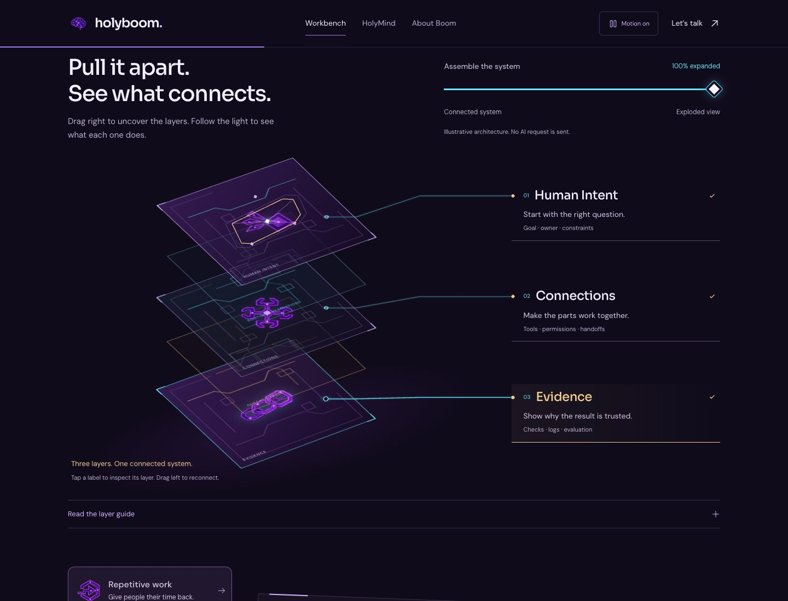
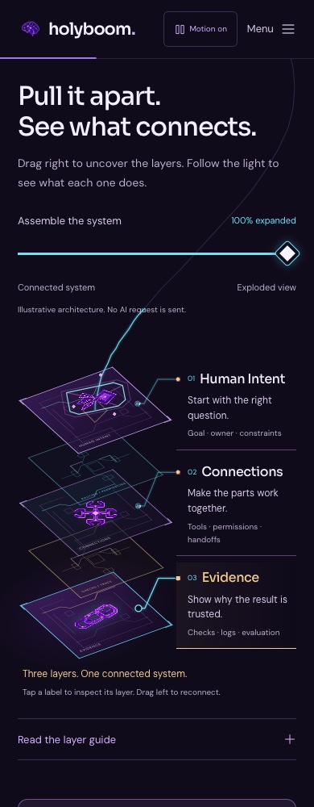

Pull it apart.
Follow the light.
Exploded System v7. Native right-to-expand control, five visual sheets, three anchored explanations, and the original pixel-neon artwork.
Captured from the published website using a native pointer drag. Right expands; left reconnects. This recording is not an iPhone performance benchmark.
Verified on the published page
| Suite | Engine | Result |
|---|---|---|
| Exploded assembly | Chromium | 47 passed |
| Exploded assembly | WebKit | 47 passed |
| Existing showcase | WebKit | 55 passed |
| Bidirectional continuity | WebKit | 43 passed |
No failed checks or observed JavaScript runtime errors. Tested at 320, 390, 680, 768, 1024 and 1440 CSS pixels. Every leader endpoint was compared with its real transformed pin and label port within 1 CSS pixel. A physical iPhone has not been tested.
Same artwork. More meaning.
Three main planes reveal Human Intent, Connections and Evidence. Two finer circuit sheets appear between them. Violet remains the identity; cyan carries motion, champagne marks arrivals, pearl forms bright cores, and orchid adds tiny glints. Original image bytes are unchanged.


Evidence
Implementation commit 4211be5. Screenshot and video evidence are static files; the live site remains the source of current behavior.